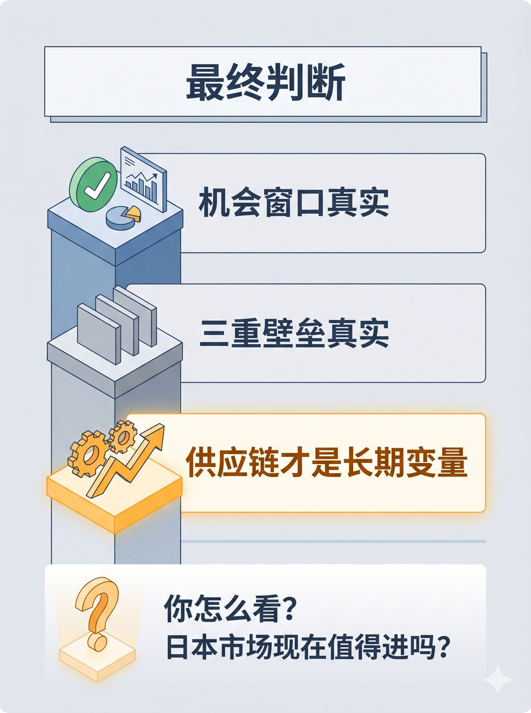

历史 Nano Banana 竖版短视频配图基线：结论页形成明确主次、判断和行动含义
生成一张 3:4 竖版静态配图。 整体采用顶部标题 + 中层三个垂直并列内容条（自上而下）+ 底部互动区的结构。 顶部标题："最终判断" 第一层：绿色确认勾图标+"机会窗口真实"，配市场/图表小符号。第二层：三重屏障堆叠图标+"三重壁垒真实"，偏中性色。第三层（加粗/突出）：齿轮链条+上升箭头图标+"供应链才是长期变量"，偏亮色突出。 第三层要明显比前两层更突出，表示这是核心判断升级。 底部互动区：问号图标+"你怎么看？日本市场现在值得进吗？"文字，与上层之间有轻微间距区分。 三层之间的阅读顺序为自上而下逐层扫读。 图中只允许出现这些文字："最终判断"、"机会窗口真实"、"三重壁垒真实"、"供应链才是长期变量"、"你怎么看？日本市场现在值得进吗？"。 不要额外新增文字，不要水印，不要"AI生成"字样，不要品牌官方 logo，不要无意义英文装饰。 整体视觉采用 clean isometric business schematic，modular business illustration with light 3D structural feel，flat illustration，light texture，理性、克制、整齐。
